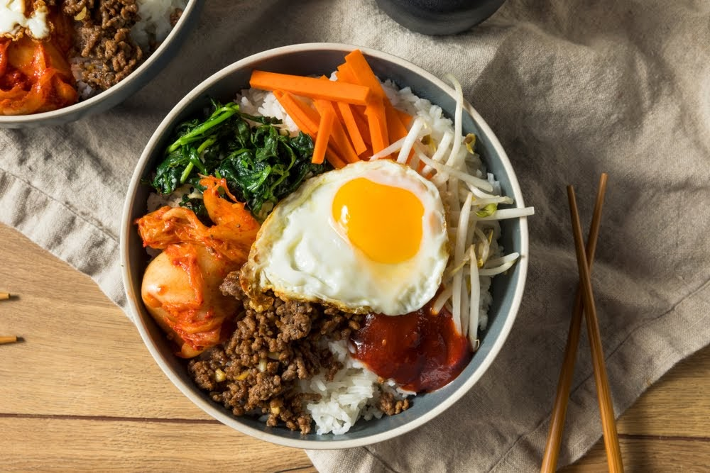

Típica de Corea del Sur, concretamente de la hermosa ciudad de Jeonju, la receta del bibimbap es fácil y perfecta para ser replicada en casa. Estamos hablando de uno de los platos tradicionales coreanos más queridos: un bowl que se compone de arroz, verduras, carne, huevo y gochujang, la salsa picante que se encuentra en casi todas las recetas surcoreanas.
Bibimbap
Ingredientes
-
2 tazas de arroz blanco
-
1 zanahoria
-
1 pepino o calabacín
-
Puñado de brotes de soja
-
Manojo de espinacas cocidas
-
Puñado de setas shitake
-
1 cebolla
-
Tiras de carne de ternera o cerdo
-
2 huevos
-
Aceite
-
Salsa de soja
-
Azúcar moreno
-
Sal
-
Salsa de gochujang
Preparación
Con todos los ingredientes desplegados en la cocina y a mano, vamos a ponernos el mantel y a ensuciarnos las manos y ver cómo preparar la receta del bibimbap paso por paso:
-
Lo primero que haremos será cocer el arroz blanco (recuerda lavarlo con anterioridad).
-
Cortamos en finas tiras la zanahoria, las setas y el pepino (si no te gusta puedes usar calabacín) y los salteamos (por separado) en una sartén con un poco de aceite durante un par de minutos, tiempo suficiente para que se pongan tiernos (sin pasarnos).
-
Hacemos lo mismo con la carne cortada en tiras. Nosotros le echamos un poco de salsa de soja y una cucharadita de azúcar moreno, pero si prefieres un sabor más neutro, no hace falta que agregues nada. Doramos y reservamos.
-
Salteamos los brotes de soja y caramelizamos la cebolla por separado. Reservamos.
-
En cuanto al huevo, lo ideal es poner sobre la preparación del bibimbap ya emplatada solo la yema de huevo cruda, que sería la forma tradicional, pero también hay quien prefiere freír los huevos. Nosotros somos de los segundos. Eso sí, ten cuidado a que la yema no cuaje demasiado.
-
Hora de emplatar: ponemos el arroz en dos cuencos y poco a poco vamos colocando en círculo los otros ingredientes, separándolos con cuidado y colores 😉 Eso es parte del encanto del plato. Encima de todo colocamos el huevo frito o en su defecto, la yema cruda.
-
Si te gusta la salsa picante el toque final será añadir una cucharadita de salsa gochujang.
Saca una foto de tu creación y ¡a mezclar el arroz con los ingredientes y a zampar! ¿Qué te parece esta sencilla receta de bibimbap coreano? Te aseguramos que los sabores son especiales y espectaculares!